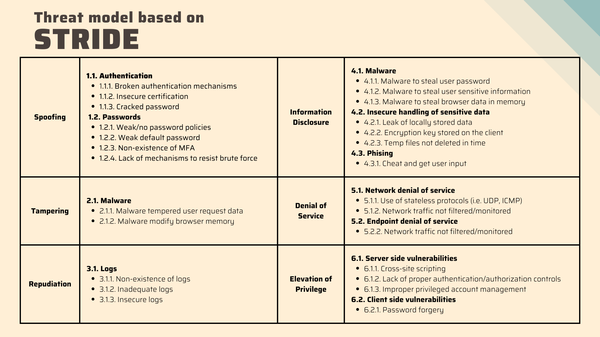

Artefacts
The artefacts I have created during the Module 5 (Information Security Management) of MSc Computer Science program.
Collaborative Discussion 1 (Initial Post): The Risks of Digitalisation (Unit 1):
Overview:
Instructions: Based on your reading of the case study listed above (Kovaitė & Stankevičienė, 2019) answer the following questions in the discussion forum:
- What do the authors mean by the term ‘Industry 4.0’ - give two examples.
- Give two real-world examples of risks that fit into the authors categories.
- Find another journal article that either supports or contradicts the points made in the cited study.
Here is my initial post:
Kovaitė and Stankevičienė (2019) asserts that Industry 4.0 is a step forward from Industry 3.0 and relies on the novel ways of interaction between humans and machines and it corporates lates technologies like Internet of Things (IoT), cloud computing or big data, among others. Without a doubt, cyber-physical systems play a central role in Industry 4.0. From my point of view, two most important examples of Industry 4.0 are:
- Smart factories (Colicchia et al., 2017) in which tasks like production, maintenance and quality control are carried out in novel ways, introducing unprecedented levels of efficiency.
- Cloud computing where the on-premises sources are outsourced to cloud service providers which provides businesses of different sizes a cost-effective (e.g., pay as you go model, lower cost of ownership, etc.) and more efficient (e.g., faster download times via CDNs, ability to scale up and out to meet increasing demand, etc.) ways to operate.
Two examples of risks that fit into the categories mentioned in the article:
- Cloud computing brings many advantages to businesses along with new challenges. While the businesses used to have complete control over their (on-prem) infrastructure in the past, now they have to follow a shared responsibility model in which the responsibility to secure the infrastructure is shared between the service provider and the business itself. AWS Shared Responsibility Model (AWS, N.D.) is a fitting example for this one. So, this requires a new type of competence. In my opinion, this example fits into technical risks and competence risks.
- Software as a Service (SaaS) is a great solution for users who want to start using a software solution right away without having to worry about maintaining the software. However, it comes with a downside for some of the users: In the past, it was possible to buy the software once and for all. Now, the users have to subscribe to the software, and which is not always an ideal choice. Take Microsoft’s Office suite for example: Even though it is still possible to buy a version of the software, Microsoft 365 (Microsoft, N.D.) subscription model provides always up-to-date version with additional benefits like cloud storage service. However, due to their reluctancy to change their habits and having to pay an annual fee, some customers tend to shy away from using Microsoft 365 and stick with an outdated version of the office suite and without the additional perks like cloud storage.
In their case study in which they studied the adoption of Industry 4.0 in Slovakia and Poland, Snieška et al. (2020) point out that level of awareness and perception of risks vary between the countries, but in general, Slovakia lags behind the many of the Western European countries due to negligence of Industry 4.0 for a long time, which affirms the competence and technical risks that are mentioned in the case study.
Note: Refer to the bottom of the page for references.
Seminar Preparation: Threat Modelling Exercises (Unit 2):
Overview:
Instructions: Read Shostack (2018) chapters 3 – 5 (that cover STRIDE and DREAD, Attack Trees and Attack libraries) and then create a threat model based on one of the following scenarios:
- A large international airport based in the United States of America.
- A large international bank based in the UK.
- A large nuclear power station in France.
You should use the Threat Modelling Manifesto, the OWASP Threat Modelling Cookbook and the ATT&CK libraries to inform your model design. Be prepared to share and discuss your designs at the seminar session this week.
I chose the "large international bank based in the UK" scenario for the exercise and started off by designing a simple data flow diagram:
Data flow diagram for a large international bank
Even though this diagram is a rudimentary one and can be developed further, I think it consists of the basic components including the entities, data flows and the trust boundaries.
Then, in the second step, I applied the STRIDE model to identify the potential threats to the bank:

The application of STRIDE model to identify potential threats
I used MITRE ATT&CK libraries as well as my own knowledge and experience to populate the table. I had the opportunity to present my work in the seminar and the tutor advised be to incorporate the DREAD model as well and also to include mitigations to the threats identified. The feedback made perfect sense to me, and I intend to continue developing this model when I have the opportunity.
References:
Amazon Web Services (N.D.) Shared Responsibility Model. Available from: https://aws.amazon.com/compliance/shared-responsibility-model/ [Accessed 7 March 2023]
Colicchia, C., Creazza, A. & Noé, C. (2017) Literature review on the ‘Smart Factory’ concept using bibliometric tools. International Journal of Production Research 55(22): 6572-6591. DOI: https://doi-org.uniessexlib.idm.oclc.org/10.1080/00207543.2017.1326643
Kovaite, K. & Stankeviciene, J. (2019) ‘Risks of Digitalisation of Business Models’ Contemporary Issues In Business, Management And Economics Engineering’2019. Vilnius Gediminas Technical University, Vilnius, 9-10 May. Vilnius: Vilnius Gediminas Technical University. 380-387. DOI: https://doi.org/10.3846/cibmee.2019.039
Microsoft (N.D.) What is Microsoft 365? Available from: https://support.microsoft.com/en-us/office/what-is-microsoft-365-847caf12-2589-452c-8aca-1c009797678b [Accessed 7 March 2023]
Shostack, A. (2014) Threat Modeling: Design for Security. Indianapolis: John Wiley & Sons
Snieška, V., Navickas, V., Havierniková, K., Okręglicka, M., & Gajda, W. (2020) Technical, information and innovation risks of industry 4.0 in small and medium-sized enterprises – case of Slovakia and Poland. Journal of Business Economics and Management 21(5): 1269-1284. DOI: https://doi.org/10.3846/jbem.2020.12279